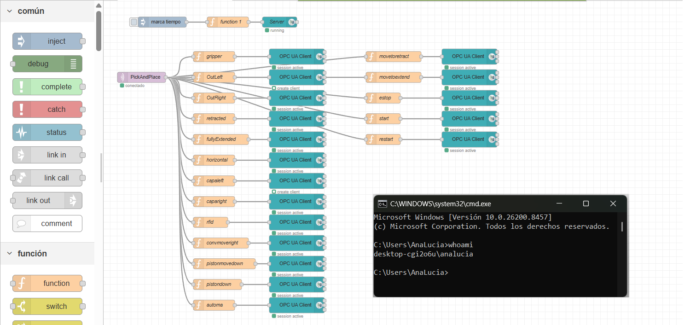

Visual Documentation
Project
Gallery
Key moments from the development process — from physical setup to virtual commissioning validation.

Festo CP Lab
Physical assembly line used for data acquisition — conveyor system with 6 stations.

Signal overview
Node-RED Acquisition 1
Complete OPC UA to MQTT workflow showing all connected nodes in FestoPC.

OPC UA-> MQTT Transform
Node-RED Acquisition 1
Function that allows the OPC-UA to MQTT transformation being the critical middleware bridging both protocols.

Signal overview
Node-RED Acquisition 2
Complete MQTT to OPC UA workflow showing all connected nodes in Virtual CommissioningPC.

OPC UA Signal Init
Node-RED Acquisition 2
Initializes OPC UA server signals for data access through OPC UA CLIENT (WRITE) nodes.

MQTT JSON Parsing
Node-RED Acquisition 2
Function node configured to parse MQTT JSON data and map selected values to OPC UA variables.

OPC UA Server Validation
UA Expert client connected to the Node-RED OPC UA server, validating correct signal creation, live data availability, and client accessibility.

PLCSIM Advanced
Virtual PLC running on PC 2 — no physical hardware required for commissioning.

TIA Portal V20
PLC program controlling the full cell sequence — conveyor, robot, and station logic.

Basic Physics Model
Definition of rigid bodies, collision models, and object sources in Siemens NX for physical simulation of the digital twin environment.

Joint & Constraint Setup
Implementation of kinematic joints and constraints for accurate motion behavior within the NX digital twin environment.

Sensors & Actuators Setup
Configuration of sensors and actuators within Siemens NX to enable input/output interaction and realistic digital twin behavior.

Signal Definition & Mapping
Definition and mapping of input and output signals within Siemens NX to enable communication between the digital twin components.

Sensor Signal Integration
Visualization of internal and external input signals in NX. External signals that are mapped to real PLC data through OPC UA can be seen in green.

Robot Joint Configuration
Definition of robot joints in Siemens NX to configure the motion behavior within the digital twin model.
Operating cell
Demonstration of the fully configured industrial cell operating in the NX simulation environment.